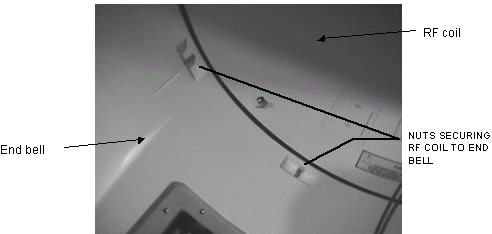
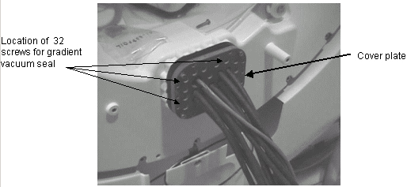
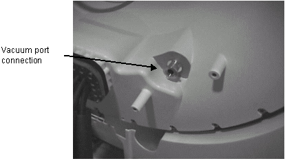
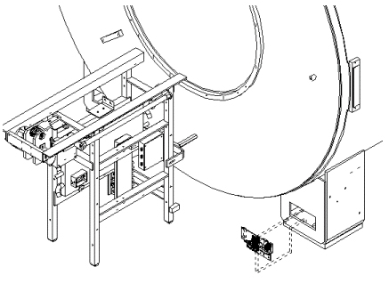
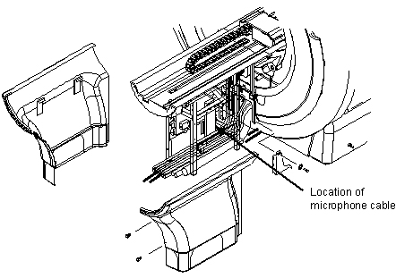

Operating Documentation
Direction 5133330-3, Rev# 14
Signa EXCITE HD 3.0T Service Methods
Module Version 1.0, Version Date 5/3/07
Operating Documentation |
| Required Persons | Preliminary Reqs | Procedure | Finalization |
|---|---|---|---|
| 1 |
Route the 12 Gradient cables and resistive shim cable through the opening in the rear end bell. Install all gaskets that were removed prior to terminating the gradient cables
Slowly move the rear end bell into place.
Use an 8 mm allen wrench to install the 24 M10 bolts that secure the rear end bell to the magnet. Use a star pattern when tightening the bolts. The front enclosure should touch the aluminum ring when finished.
Install the 8 nuts that secure the rear end bell to the RF Coil. See Illustration 1.
Illustration 1: REAR END BELL

Install the 32 screws from the Gradient Vacuum seal fixture. See Illustration 2.
Illustration 2: GRADIENT VACUUM SEAL FIXTURE

If necessary connect the optional resistive shim cable.
Install the vacuum pump connector at the rear end bell and install the cosmetic cover. See Illustration 3.
Illustration 3: REAR END BELL

Re-terminate the gradient cables. Refer to .
Slide the rear pedestal to its proper location in back of the magnet.
Install the Patient Comfort Module.
Route and connect the cable going from the patient lights to the light source. See Illustration 4.
Illustration 4: LIGHT SOURCE

Connect the speaker and microphone cables to the intercom board located on rear pedestal. See Illustration 5.
Illustration 5: REAR COVERS

Install the bridge. See .
Remove the lock out and tag out.
No finalization steps.